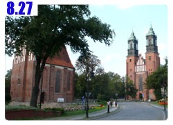
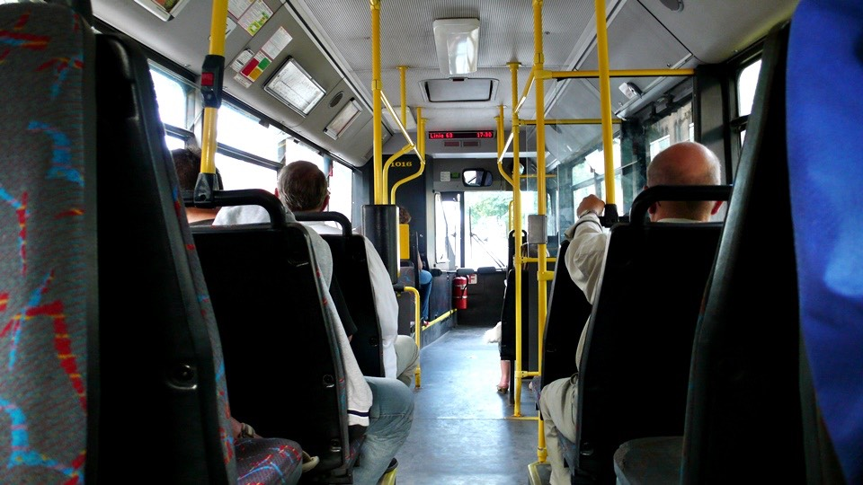
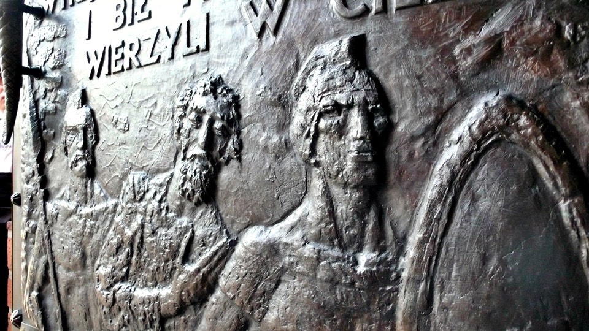
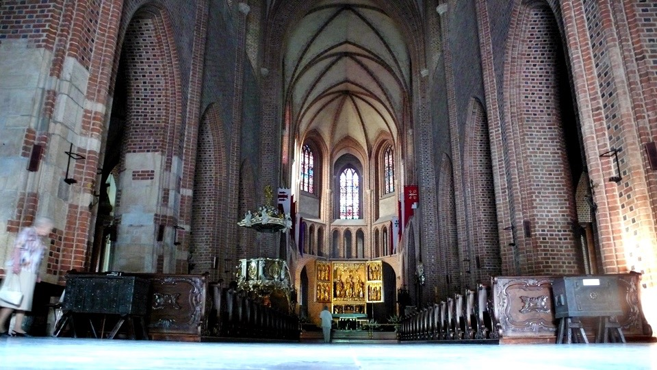
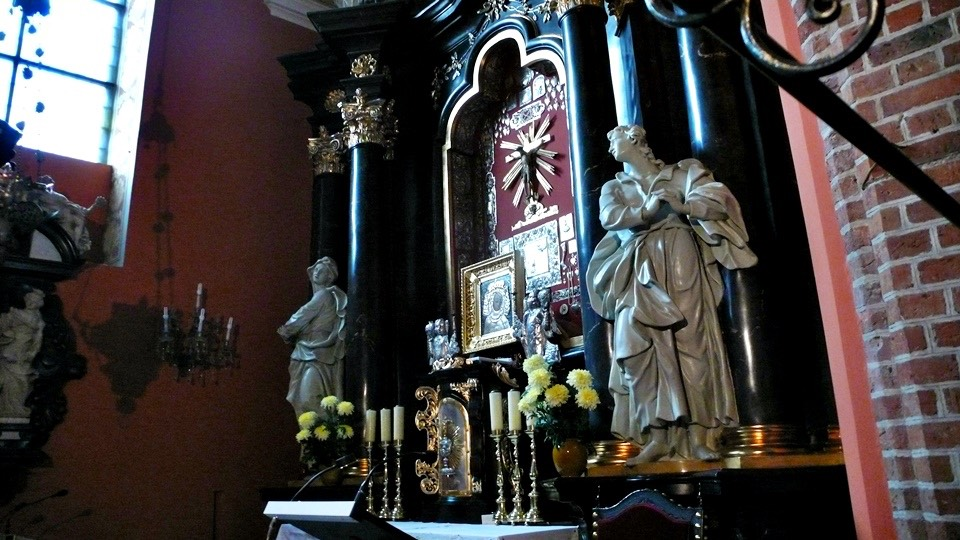

The biggest problem has been solved in Poland,
after both the front and the rear tires of the bike were changed.
All that are left are just small things that need to be fixed;
Goose and Guerilla together fixed the rest of the problems.
Because of my stupidity, I forgot to unplug a wire on the bike when I changed the tires.
I kept wondering why the front tire wouldn’t come off, was it caught on something?
So after my very hard pull, the wire that connects the night-light on the bike was broken.
The wire has been broken for over a month,
I didn’t want to mention this since I was afraid people would worry
about me and I coudln’t fix this wire immediately.
I was pretty sure I would hear lots of concerned comments about
riding at night without any lights to guide me.
So I know I have to find a resting place everyday before nightfall, and not ride in the dark.
I have been safe all the way so far, and finally I can ride normally with everything fixed.
Guerilla connects the positive and the negative wires back,
using electrical tape to tape the ends. Now the bright bike headlight is working normally again.
Goose and Guerilla both attend medical school here in Poland.
They are very self-dependent on DIY things such as fixing the bike.
Really, one needs to know how to do everything when living overseas.
The front carrier lost a screw for over three months by now,
and now the whole screw hole is completely flat.
I had thought there was no way to fix this problem, but Guerilla figured out a solution.
Guerilla put plastic tubing with screw line inside the screw hole,
and then used a smaller screw for the hole.
After that we used zip ties to fasten the carrier. This is another problem solved.
There were other things such as the meter counter that was loose.
I had secured the meter counter with plastic tape,
but now the meter counter is secured with double sided tape plus zip ties.
After changing to the new rear tire, the bike makes this clocky noise.
Guerilla suggests changing to a new chain, and then readjust the speed changer,
this sounds like a huge task at hand.
I was worried this would take too much of their time so we decided not to do this part for now,
considering Goose and Guerilla are starting school tomorrow,
and facing heavy classes at the medical school ahead.
So the bike fixing up stops at this point for now.
Today we aren’t driving the Fiat around town; rather we are taking the bus.
The bus uses the same type of tickets as the electronic bus, which is counted by amount of time riding the bus.
In the same amount of time there is no restriction on how many bus changes one can make.
In the future when I walk around town I would probably take the bus as well,
so I asked Goose to show me once how to take the bus, so I would know how to ride the bus.
The bus stop has signs showing which car would stop here.
The white bus with black wording car is one type, the black bus with white wording is the night bus,
and the red bus is the special bus.
The destination is a huge church in the desert; we can reach it by taking bus 63.
Inside the bus, there is a sign showing which stops this bus makes, and how long it takes to go to each stop.
In general, it takes 1-3 minutes between each stop.
This way, the rider can figure out how long one needs for the bus ticket.
The small print below the bus stop is the street name, and it also includes other information for bus change.
The connecting area in the bus has wide space, there is total of three bus doors,
no designation which one is for boarding and exiting.
Whenever a bus reaches a stop, one must press a button outside the bus before the door opens for boarding,
the same goes for exiting the bus. The driver is only responsible for driving the bus.
He is not responsible for opening/closing the doors, selling tickets, or inspecting the tickets.

Riding the bus and the electrical bus is depended upon one’s conscious; it is very easy not to pay the fair.
Because some people have monthly or yearly bus passes,
they do not have to insert their ticket every time they board a bus.
The people with monthly or yearly passes only have to show their ticket when someone asks to inspect their tickets.
One buys the ticket before they board the bus,
you can easily purchase tickets in the little stall near by, buy 10 gets 1 free.
After you board the bus, you insert the ticket, and no one watches you.
Once awhile someone asks to inspect your ticket,
I am not sure how much he or she will fine you for no ticket.
The bus fare gets cheaper as time goes on. Every 10 minutes is one unit,
the price is $1.3Zit approximately $15NT ($0.5USD)
For $15NT, one can ride the bus for approximately 10 minutes.
Counting after one boards the bus, it is about 5 stops or so.
If one submits 2 tickets when they board the bus, then one can ride about 30 minutes.
If one submits 3 tickets, then one can ride 1-hour bus in one setting.
There is also one unit for 30 minutes ticket available,
this way one would not need to submit 2 tickets when they board the bus. The student ticket is half price.
The yearly bus pass is amazing, approximately $200Zit ($73USD), average $2USD/day.
The yearly pass is paid off with just a ride every other day.
In addition, the yearly pass has no limit on what time one can take the bus, and the quantity of the rides.
At first, one feels it is troublesome to use timing for bus price unit,
but with the same ticket under the same time unit one can change to any other bus.
Besides, the longer the bus ride goes, the cheaper it is, thus this type of bus fair calculation do benefit the riders.
I am curious if any other country other than Poland use this type of time unit bus calculation.
The sign at the bus stop states clear what time the bus arrives.
The left is weekday bus, the middle is the Saturday bus, and the right side is the Sunday bus.
The bus schedule is from 5am to 11pm everyday.
The right side listing shows the stops the bus has made.
The bold wording with arrow next to it is the name of this particular stop.
And the sign also shows the amount of time one needs between the following stops.
The current location is Katedra stop, which is the desert area in the middle of a river.
There are also two very old and pretty churches near by.
After getting off the bus, one will see the pointy church building.
To get across the street one takes the underground walkway.
There are some graffiti on the walls of the underground walkway, but in general the whole area is clean.
Walking in Europe, one usually sees a beautiful church building around any corner.
Walking in the street of Poland, one sees beautiful girls walking by any time, it is good to be alive.
This is the entrance to the church. There are two buildings to the church.
The left is the one over 1000years old and hasn’t been destroyed by war, still in top condition.
The right church is one with twin pointy tops with a priest delivering a sermon.
The Roman Catholic Pop John Paul 2nd has also visited this church in the past.
Too bad this church was partly destroyed in the Second World War, and has been reconstructed.
The exterior looks newer, although everything inside is ancient including the sitting stool.
This is the church on the left, built in 968A.D., count with your fingers to see how old it is.
This is memorial statue left from Pope John Paul 2nd’s visit.
The little oil lamp on the bottom is a tradition of Poland.
For Halloween in the US people eat pumpkin and ask for candy. In Poland, people visit graveyard and light a lamp.
In the evening, there is a lamp lighted everywhere; it would be hard to forget this kind of scenery.
In the front of the big church, it is built with red bricks.
The top areas are all spring grass color,
not sure if this is from oxidation or if they selected this type of building material on purpose.

The stained glass window from the outside looks normal,
but once inside, one can see the light shinnying in with lots of colors.
The outside is already pretty, but the inside is amazing.
The front entrance is very low key, it is also very rare for me to visit the inside of a building on this trip.
The entrance has two hanging lights; those are only lighted up in the evening.
At the same time, the church has special lightening system at nighttime.
Normally this is where I stop talking about the church,
but today is different, this is just the beginning of my introduction.
Because I am not very knowledgeable in religious matters,
I am not going to talk about anything other than normal things, just in case it becomes a laughing stock.
If there is anyone with Catholic background and will supplement information regarding these photos,
I will be very grateful.
There will be more photos at the bottom than words, please browse at your leisure.
Once I get supplement information, I will explain photos one by one so everyone can be informed.
Before we enter, let’s mention basic manners in visiting a church.
Shorts, tshirt, hats, and shades are frowned upon inside a church.
In addition, regardless how dark it is inside, do not use flash while taking pictures.
Lets start,
The carving above the front entrance.
By looking at the color of these carving they should be silver, but probably oxidized already.
The carving on either side of the front entrance is carved with detail.
I haven’t even gone inside and already can feel the religious feel.
This feels similar to the wall painting in Tibet, other than being art item, those paintings also tell stories.
Each painting tells a history or a Bible story.

If the photos are a little pixilated, please accept them as they are.
Looking out of the windows after entering the church,
the sunlight looks too bright compared to the environment from inside the church.

The stained glass window that isn’t any special now displays its colorful glory from the inside.

從外面看不出端倪的彩繪玻璃，一幅幅都展現出了她的美麗姿態。

The main seating area, after the Sunday service it is empty.
However, on Sundays this place is packed with people.
Once entering the church one will see two stone carved statues holding the holy water.
There is only a little holy water inside, dip your finger in it to mark the cross,
followed by kneeling down in front of the cross.
There is armor next to it, this person looks like a knight with his name and the description on the wall,
it is a burial place inside.
There are lots of burial places like this inside the church.
By looking at the carving one can see what this person used to look like.
Even though it is a grave inside, but I don’t feel fear here.
The church is separated into a main area, and separate smaller areas connected by the halls on either side.
Each area has different displays, mainly showing art, statue, burial place, and stained glass.

There are burial places everywhere, and the people who are buried inside the church must be important people,
probably people who are either priest or ones that contributed to Poznana.
There are smaller halls not open to the public, people can not enter without special permit.
Those areas will have fence blocked outside. Even though I couldn’t enter,
I could still see the beautiful displays through the fence.
Here is a display of a famous art, St. Mary in red.
The original has already been removed to elsewhere.
According to legend, when there was war-attacking Poland all the way to this church,
this painting had red tears dripping down.
On closer inspection, this is a painting with 3-D effect, on the top of St. Mary there is also a gold halo.
This is the small display room deep inside the church so call the gold prayer room.
This is because everything inside is made of gold. It costs money to visit inside.
The camera couldn’t catch the gold feel, however the view in this room is shocking to the human eye.
The ceiling on the gold prayer room.
The painting and carving on the window.
The painting on the wall and everything else are made with gold.
Even though the church had made everything in gold, it doesn’t not have an expensive feeling to it;
rather it provides a luxurious indulgence feeling for the art pieces.
The floor to the gold prayer room, there are letters outside the circle, I am not sure what language it is in.
This is the burial place inside the gold room. This person has a huge hat on; he must have been an important person.
A normal looking painting on the wall, but I can’t imagine the history of this painting.
This is the view from the front seating area, the left is a fancy decorated staircase, and on the bottom is a table.
In the front is a glorious gold statue; there is stained glass above.
The front table is used for service.
Anyone enters the church will keep their voice low; even breathing has become lower sound.
This is the book below; I am not sure what is inside.
Wow, finished with the tour, this tour is comparable to visiting 33 buildings in Tokyo.
Walking outside to be surrounded by beautiful girls in Poland.
The floor here is all traditional stone ground,
they are still in top condition even after being stepped on for hundreds of years.
This is amazing architecture since in Taiwan the walkways are constantly in broken or chipped stages.
This is the mosaic art by the main entrance; this is completely made with pieces of colorful stones.
The fire extinguisher outside the church also has the church’s mark.
This is the backside of the church, there are lots of pointy rooftops,
and I am not sure how to get up there from inside the church.
There are no stray dogs in Poznana, although there are lots of pretty girls walking with their dogs.
Each year the popular breed of dogs changes, sometimes it changes to a mini dog.
If there is a collar on the dogs, so there must be an owner.
The cats are not as controlled. There are two cats sunning behind the church.
The cats look very clean, and not afraid of strangers.
When I put my hand over there the cat will come over for petting,
so the cats probably have owners, and allow them to roam around the church area.
People who like dogs or cats must be different, considering these two types of animals have different personality.
I was hungry after touring the church. I ate dinner at this Indian restaurant next to this huge man made lake.
This man made lake also has lots of history behind it; they have yearly rowing competition here.
There is also a place for people to run and look around, very good for people to ride their bikes here as well.
The very elegant Indian restaurant next to the lake, time for my big meal.
People who are hungry please look away or go get something to eat before looking at the rest of the photos.
This is the menu, do you understand it? The meals are under $30ZIT ($11 USD), approximately $400NT each.
It is all curry meals here; there is lamb, fish, and chicken.
There is no pork or beef, but unlimited rice. When one is hungry this will be a great meal.
While here, I should explain other European nation’s pricing.
The restaurants that don’t provide drinking water are the norm.
In a normal Italian restaurant, a glass of drinking water cost $8 Euro ($2.90USD), approximately $300NT.
A bottle of 500cc Coca Cola is approximately $14 Euro ($20USD)
or $600NT when purchased at a small side vendor in Italy.
The cost of living in Europe is very high,
just to think when I traveled around France for 51 days cost $100,000NT ($3333USD),
approximately $2000NT ($60USD) each day.
Besides I stayed in the hotel everyday, and it was in July and August,
the busiest time to travel. Although it was very cheap back then.
The average meal price on the menus will stay similar after arriving to Europe,
except now all the money changes to Euro. It would be hard to eat a meal less than $100Euro ($150USD).
After looking at the cost of living in Europe,
the cost of living and traveling in Poland is pretty cheap in comparison.
The cost of traveling cheaply in Poland for a month is the equivalent of traveling for a week in any other European countries.
The appetizer is this fried shrimp, this is pretty good.
However, one has to be careful eating seafood in Polish cities that are not near any body of water,
it is common to get stomach ach. The salmon sold here is this weird brownish color.
The seafood sold in the market is from when they are fresh all the way to ready to go bad,
and the price is expensive as well.
The seafood does not come off the shelf until they are to the point of getting smelly,
but they aren’t tossed away. They are then smoked and sold again.
There are three types of seasoning, a green and two brownish ones, one of the seasoning is spicy and delicious.
I can eat just 3 bowls of rice alone with the spicy sauce.
Of course with today’s good meal I don’t need to eat just spicy sauce with rice.
I am hungry again just by looking at this picture.
Indian food doesn’t look appetizing, but every meal is delicious.
After writing so many travel journals,
I found I am not very good talking about two types of things, one is art, and the second is food.
Every time I see an art piece, what I write doesn’t describe what I feel even to 1%.
This is the same with the meals I eat. I am wondering how can I describe this is a tasty meal?
This is no wonder in the Chinese Chef picture every time when they eat a delicious meal;
they have pictures of dragons and phoenix flying.
I know the picture looks ridiculous, but for the people who are eating that meal that is how they really feel.
Traveling is a great thing to do, however, I highly do not recommend traveling with big groups.
There are two types of self-traveling, one is by self, and one is with friends.
Independent traveling is another feel, opening one’s view, and everything learned,
especially when one returns after traveling for so long.
People ask what do you feel after traveling to so many places?
Even if you can’t answer that question, it is ok, because inside your heart you know what you saw.
When you tell people what you learned is not the same anymore,
and people who are listening can’t understand what you felt on your travels.
Finally it isn’t necessary to write the travel blogs.
It takes more effort to write these than riding the bikes with the time spent organizing the blogs.
There has not been one day where I willingly wrote these blogs with details,
using so many words and photos to describe the details; this is harder than fighting an alligator.
I rather fight with an alligator than write these blogs.
With the time spend organizing these blogs, I rather go outside to breath the fresh air and walk around the town.
Every time I write the blogs I pretend I am writing to Misasa,
this is because when I get older and forgets, at least these can be memories for me.
Because I am sad I couldn’t take Misasa with me on this trip, so there is energy for me to write blog after blog.
I feel bad not taking her with me, thus I use these blogs to show her what I saw and see.
On a side note, there is no possibility to publish a book from this trip since I wasn’t looking for money on this trip,
and then why publish a book to start an argument.
The people who like travel can read them through the internet, and cut down less trees,
print less paper, and let the world be greener.